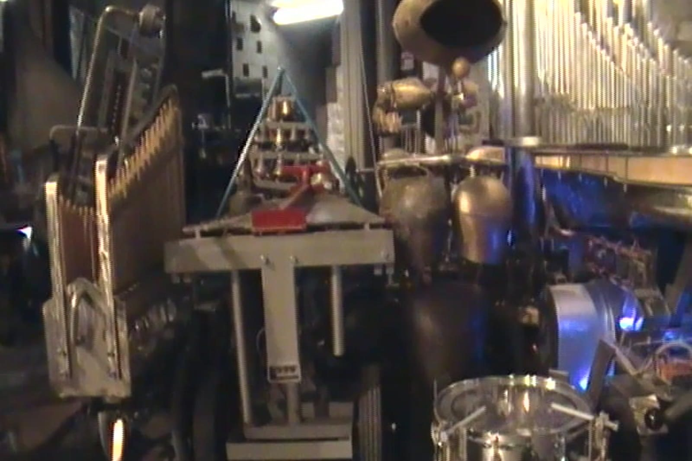
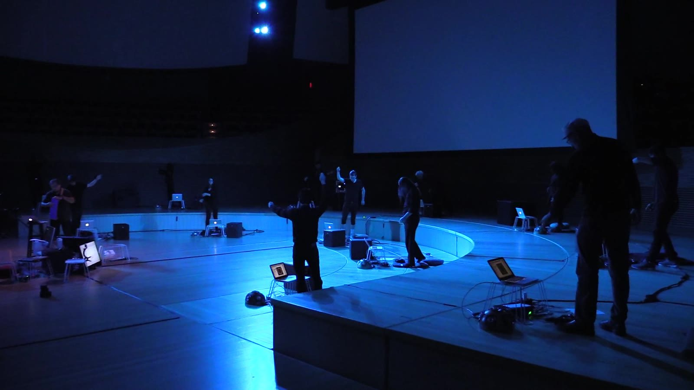
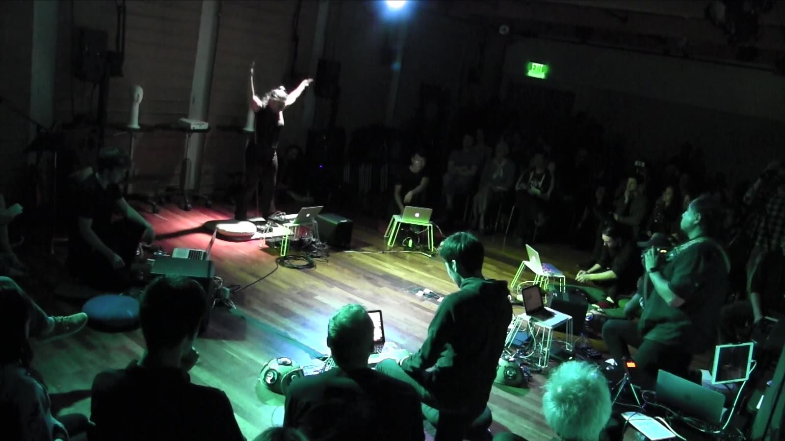

CatalogueCatálogo
Works for laptop orchestra and for robotic performersObras para orquesta de laptops y para intérpretes robóticos
Works for laptop orchestra and for robotic performers. Composer in residence with the Stanford Laptop Orchestra, 2018; premiered by the Logos Foundation Man & Machine Robot Orchestra.
Obras para orquesta de laptops y para intérpretes robóticos. Compositor en residencia de la Stanford Laptop Orchestra, 2018; estrenadas por la Logos Foundation Man & Machine Robot Orchestra.
← → · Esc← → · Esc

Laptop & robot orchestrasOrquestas de laptops y robots
Arcontinuo and laptop orchestraArcontinuo y orquesta de Laptops · 2018 · 10:01
Orbits: bodies moving in orbital, sinusoidal motionÓrbitas: cuerpos en movimiento orbital y sinusoidal

Laptop & robot orchestrasOrquestas de laptops y robots
Laptop orchestraOrquesta de Laptops · 2018 · 9:19
Laptop & robot orchestrasOrquestas de laptops y robots
Robot orchestraOrquesta de Robots · 2012 · 10:46
Circadian rhythms: the biological clock, played by robotsRitmos circadianos: el reloj biológico, tocado por robots